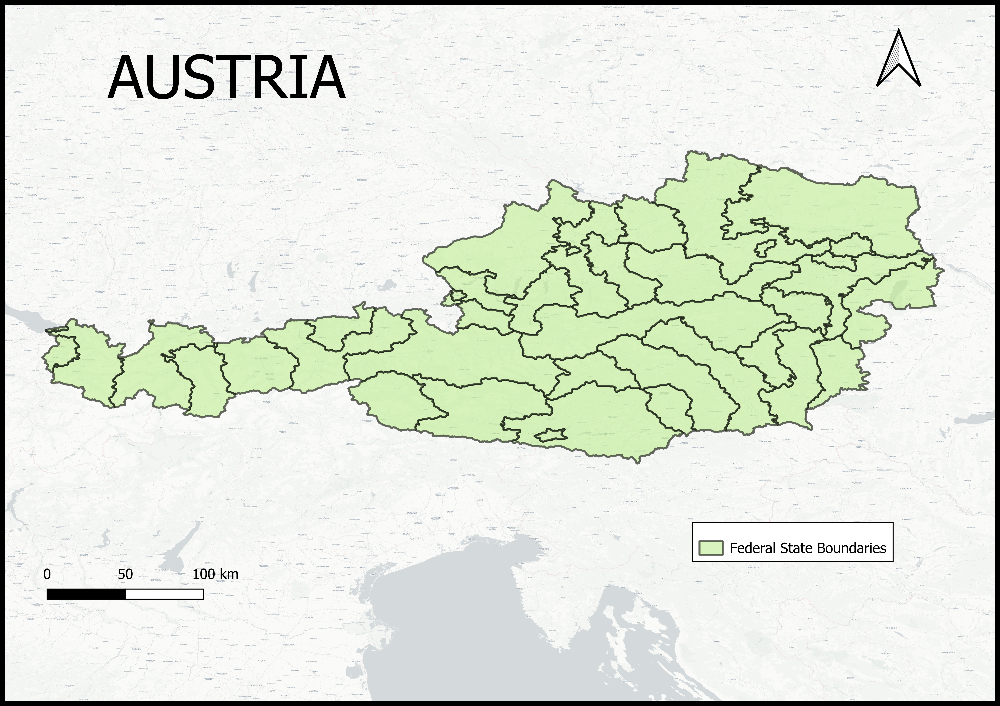
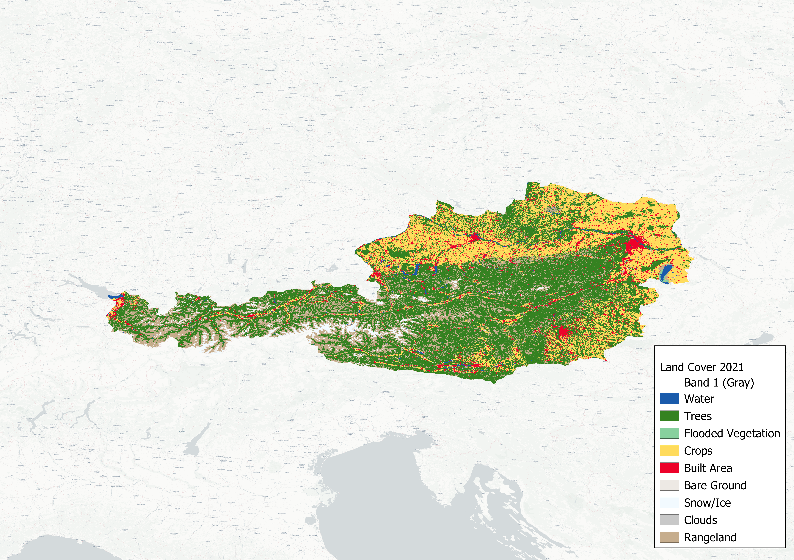
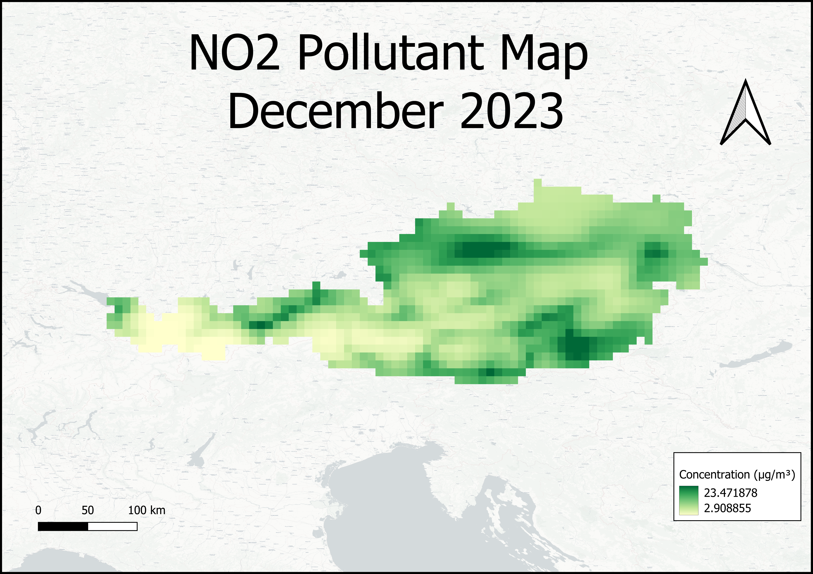
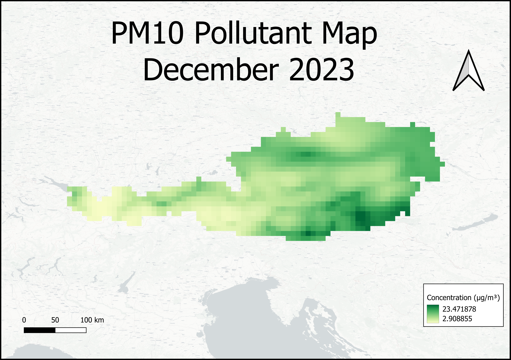
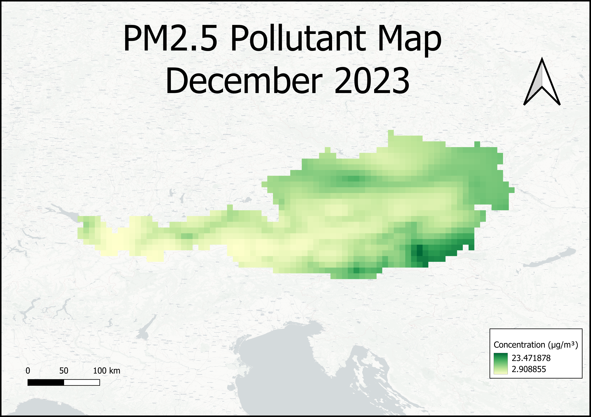
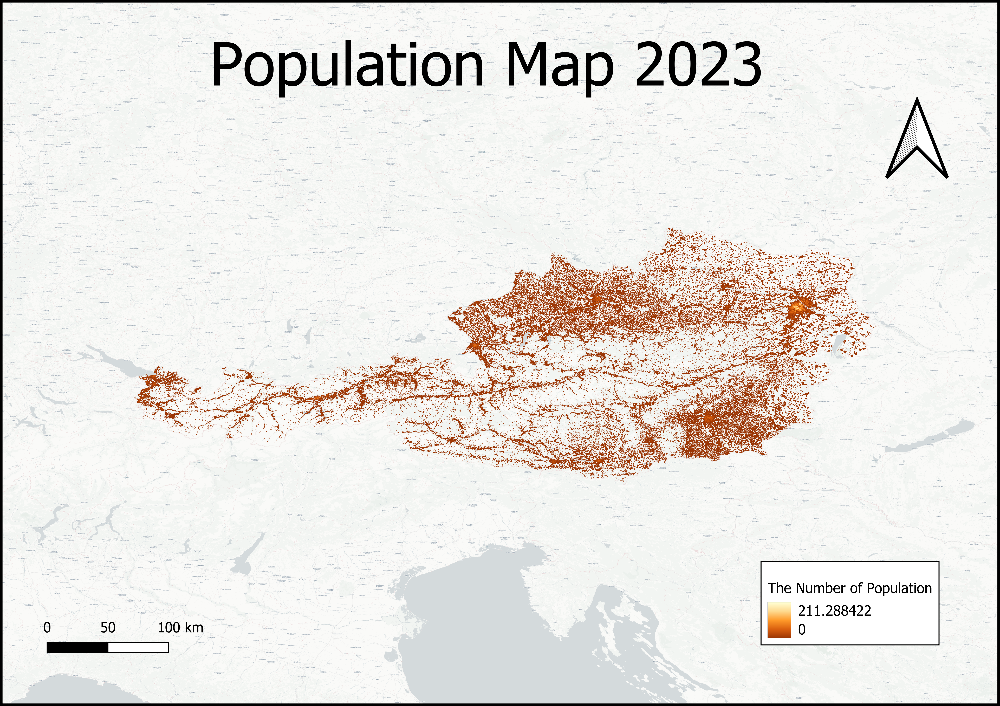

×

Summary of the methodological framework used to analyse air pollution, land cover dynamics, and population exposure across Austria.

The project focused on Austria as the study area for investigating the spatial distribution of air pollution, land cover dynamics, and population exposure. Austria was selected due to the availability of environmental datasets and its diverse geographical characteristics, including urban centres, agricultural regions, and mountainous landscapes. Defining the study area was an essential first step, as it established the spatial extent for all subsequent analyses and ensured consistency across the datasets.
To support the investigation, environmental and demographic datasets were acquired from a range of authoritative sources. Air quality data for nitrogen dioxide (NO₂), particulate matter less than 10 micrometres (PM10), and particulate matter less than 2.5 micrometres (PM2.5) were obtained from the Copernicus Atmosphere Monitoring Service (CAMS) Reanalysis database for the years 2021 and 2023. Land cover information was sourced from the ESRI 10 m Annual Land Cover dataset, while population distribution data for 2023 were obtained from WorldPop. Together, these datasets provided the environmental and demographic information required to analyse pollution patterns, land cover change, and potential population exposure across Austria.
Following data acquisition, a series of preprocessing operations were performed to prepare the datasets for spatial analysis. Because the data originated from different sources and formats, standardisation was necessary to ensure compatibility within the GIS environment. All datasets were organised and processed using QGIS to create a consistent analytical framework.
Raster layers were reprojected to a common coordinate reference system (WGS84 EPSG:4326), clipped to the Austria study area boundary, and checked for spatial consistency. The CAMS pollutant datasets, originally provided in NetCDF format, were converted into raster layers suitable for mapping and analysis. Monthly pollutant datasets were organised by year and pollutant type to support the generation of annual averages, concentration maps, and change detection analyses.
Additional preprocessing was carried out on the land cover and population datasets. Land cover layers were prepared for change detection analysis, while population data were cleaned and standardised for use in the Population Exposure Assessment. Cartographic styling was also applied to improve map visualisation and ensure consistency across all outputs. These preprocessing steps established a reliable foundation for the spatial analyses presented in the subsequent stages of the project.

This map presents the study area, Austria, which serves as the focus of the air pollution and land cover analysis.
Click on the image to view it in full size.

This map shows the preprocessed land cover dataset for the study area.
Click on the image to view it in full size.

This map displays a preprocessed NO₂ dataset for Austria. Similar preprocessing steps were applied to all NO₂ datasets for 2021 and 2023.
Click on the image to view it in full size.

This map shows a preprocessed PM10 concentration dataset for Austria. Similar preprocessing steps were applied to all PM10 datasets for the years 2021 and 2023.
Click on the image to view it in full size.

This map shows a preprocessed PM2.5 concentration dataset for Austria. Similar preprocessing steps were applied to all PM2.5 datasets for the years 2021 and 2023.
Click on the image to view it in full size.
Following data preprocessing, spatial analysis was conducted to investigate the distribution of air pollutants and land cover dynamics across Austria. The analysis focused on nitrogen dioxide (NO₂), particulate matter less than 10 micrometres (PM10), particulate matter less than 2.5 micrometres (PM2.5), and land cover datasets for 2021 and 2023.
Monthly pollutant maps were generated for all months in 2021 and 2023 to examine temporal variations in air quality. These datasets were subsequently aggregated to produce annual average and concentration maps for each pollutant, providing an overview of spatial pollution patterns across the study area.
Annual Mean Aggregation Change (AMAC) analysis was performed to assess changes in pollutant concentrations between 2021 and 2023. The resulting maps highlighted areas where air quality conditions improved or deteriorated over time. In parallel, land cover change analysis was conducted using annual land cover datasets to identify transitions between land cover classes and evaluate landscape changes during the study period.
Zonal Statistics were then applied to calculate mean, minimum, and maximum pollutant concentrations within defined spatial units, supporting regional comparisons and the identification of areas experiencing elevated pollution levels. Bivariate Analysis was subsequently performed to examine relationships between pollutant concentrations, land cover characteristics, and population distribution. The outputs of these analyses provided the foundation for the subsequent Population Exposure Assessment and the development of visual summaries integrated into the WebGIS platform.

figure 2. This chart illustrates the processing of NO₂, PM10, PM2.5, and land cover datasets, including map generation, change detection, zonal statistics, bivariate analysis, population exposure assessment, and WebGIS integration.
Using the pollutant concentration maps generated during the spatial analysis phase, a Population Exposure Assessment was conducted to evaluate potential exposure across Austria. Population count data for 2023 were obtained from WorldPop and integrated with pollutant concentration datasets for NO₂, PM10, and PM2.5. This analysis identified areas where elevated pollution levels overlap with higher population densities, providing insight into potential exposure patterns across the study area.

Population count data for Austria in 2023 obtained from WorldPop. The dataset provides the spatial distribution of population across the study area and was integrated with pollutant concentration maps to assess potential population exposure to air pollution. Click on the image to view it in full size.
The final stage of the project involved the visualization of analytical outputs through an interactive WebGIS platform. The WebGIS environment allows users to explore pollutant concentration maps, land cover transitions, and population exposure results interactively. This platform supports a more dynamic understanding of spatial pollution patterns and demonstrates the application of GIS and WebGIS technologies in environmental monitoring and air quality assessment.
Interactive Map